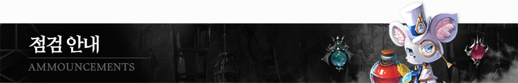

Original text
Contribute a better translation
| 7310 | 【1月27日定期点検案内】（完了） | 登録日 | 2021-01-26 16:35 |
|---|---|---|---|
| 作者 | 赤い宝石 | ヒット | 2045 |
|

こんにちは。冒険家の皆さん、赤い宝石です。 以下のように赤い宝石の定期点検が行われます。 冒険者の皆さんはご利用にご参考ください。 一時 -ゲーム：2021年1月27日（水）09:30〜11:30 -ウェブ ：2021年1月27日（ CAN ）9時30分11時30分まで 検査内容 - スイングドリーミングボックス、クリスマスコスチュームパッケージ販売終了 -サーバーの安定化と修正の反映 修正 - ヤティカヌ秘密ダンジョン妖精の試験2段階進入不可現象修正
|
|||